Reparo estrutural nas fundações


Resumo executivo
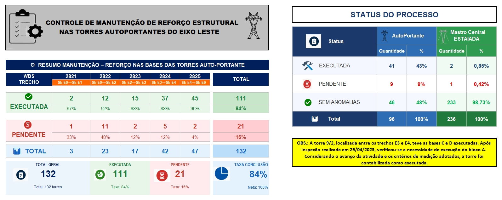
Leste
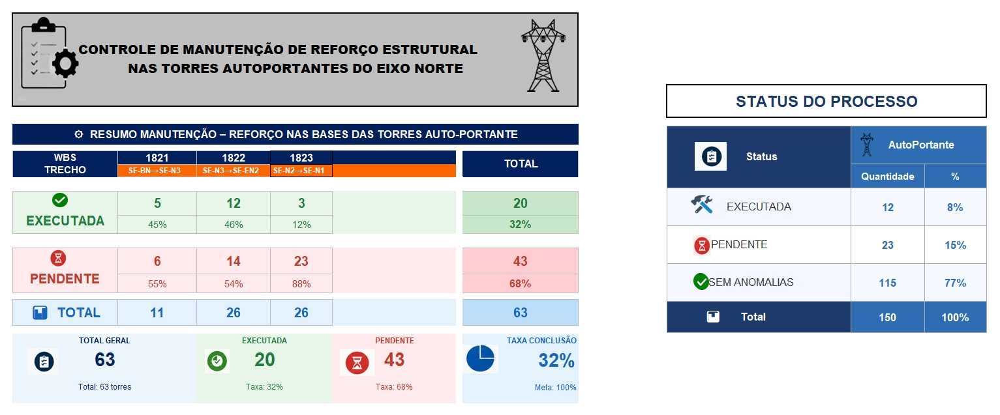
Norte
Etapas do reparo
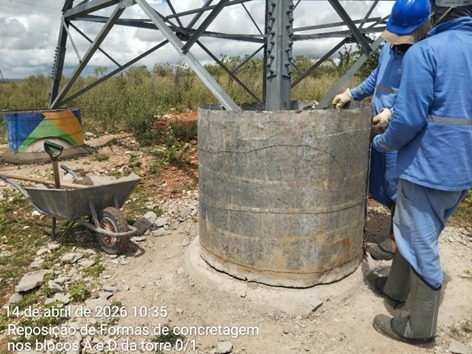
aplicação das fôrmas
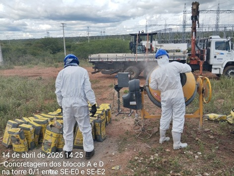
preparação do concreto
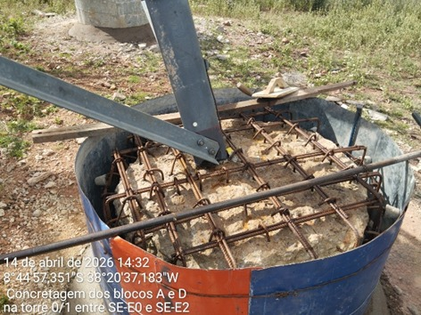
armadura de reforço
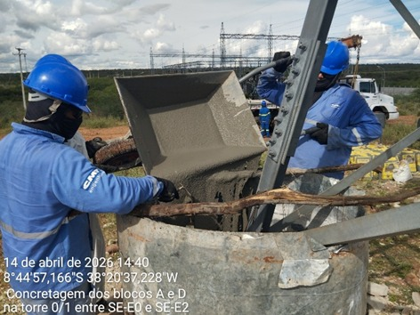
preenchimento das fôrmas
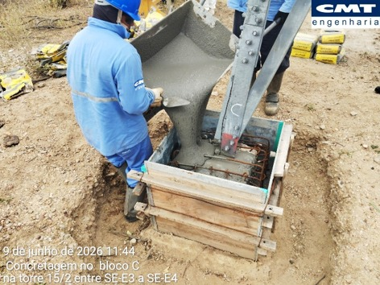
preenchimento das fôrmas
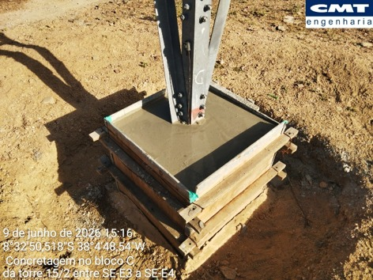
aguardando a cura
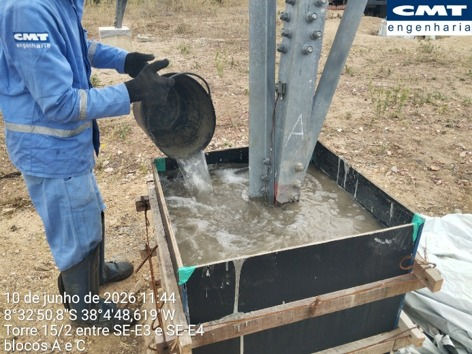
cura do concreto
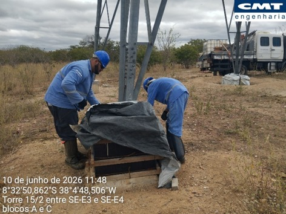
cura do concreto
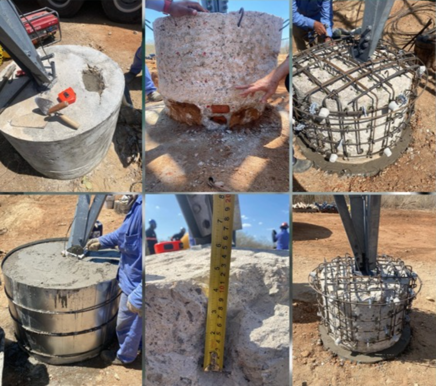
diferentes etapas do processo de recuperação